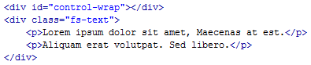
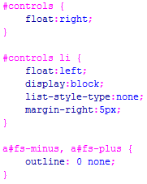
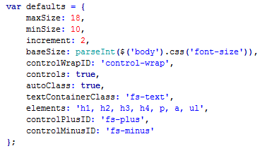
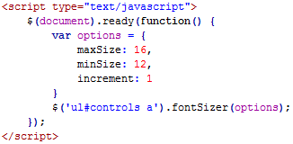

Font Sizer Plugin
What it does?
Font sizer is a highly configurable, unobtrusive jQuery plugin that allows users to adjust the font size of specific area(s) of text on your website. It's lightweight, easy to configure and adds a nice bit of functionality to your blog, forum or news site.
How to use Font Sizer?
Font Sizer requires very little markup to be added to your exsisting pages. At a minimum you'll need a container div element to hold the sizing controls and you'll need to wrap the text that can be resized in a div element.
Required Dependencies
- Add the "fontSizer" folder to your site root
- Include jQuery 1.3.x or higher in the document head
- Include jquery.fontSizer.js in the document head
- Included stylesheet or append styles to existing css
Basic XHTML markup
CSS
Default usage

Default Options
Below are the default values provide by the plugin. These values can be overridden by passing an options object to the fontSizer() method, but overriding these values is not required for the plugin to work.
Override Defaults
If you prefer to use your own controls instead of the plugins, simple override the controls value by passing false or 0 to the fontSizer() method.